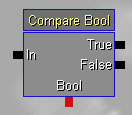
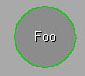
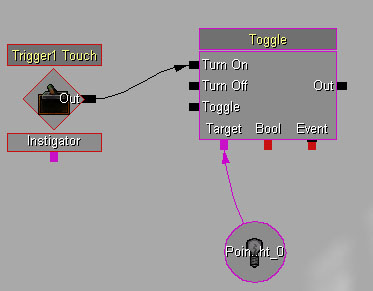
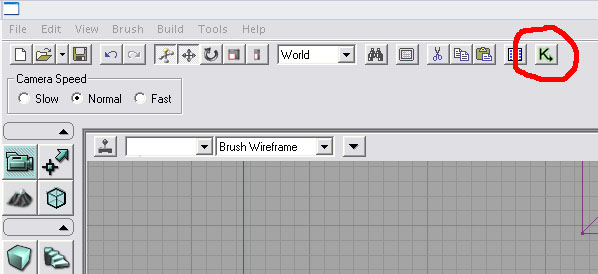
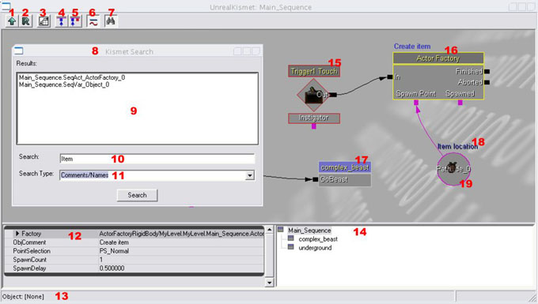
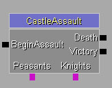
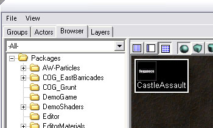
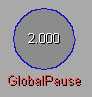
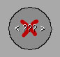
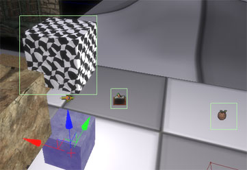

UDN
Search public documentation:
KismetUserGuideJP
English Translation
中国翻译
한국어
Interested in the Unreal Engine?
Visit the Unreal Technology site.
Looking for jobs and company info?
Check out the Epic games site.
Questions about support via UDN?
Contact the UDN Staff
中国翻译
한국어
Interested in the Unreal Engine?
Visit the Unreal Technology site.
Looking for jobs and company info?
Check out the Epic games site.
Questions about support via UDN?
Contact the UDN Staff
Unreal Kismet ユーザーガイド
ドキュメントの概要：UnrealKismet gameplay スクリプト化 システムの使用法のガイド。 James Goldingにより作成。 Richard Nalezynski? により管理。はじめに
UnrealEngine3 の UnrealKismet ツールは非常に柔軟で強力なツールであり、プログラマでなくても、ゲームプレイの複雑なフローをレベルごとにスクリプティングできます。このツールを使うと、単純な機能のシーケンスオブジェクトを接続して、複雑なシーケンスを作成することができます。この文書では、UnrealKismet のインターフェイスの概要と、シーケンスを作成する方法について説明します。使用可能なシーケンスオブジェクトの種類については、 UnrealKismet 参照 を参照してください。また、UnrealKismet チュートリアル では、単純なシーケンスの作成を順を追って説明しています。シーケンスオブジェクトの種類
シーケンスを作成するために配置するオブジェクトには、4 つのカテゴリーがあります。| イベント |  | シーケンスへの "入力" となるオブジェクトです。入力は、ゲームのアクタからの場合もあります。イベントは赤い菱形で表されます。 |
| アクション |  | レベルのアクタに対し、何らかのアクションを行うオブジェクトです。左側に入力を、右側に出力を、下側に変数接続を持つ四角形で表されます。 |
| 条件 |  | レベルには影響を与えませんが、シーケンスの制御の流れに影響を与えます。 |
| 変数 |  | イベント、アクション、または条件によって使用される特定の型の情報を格納します。色のついた円で表されます。 |
| 赤 | 論理値 (true または false) |
| 青 | 浮動小数点数（例：1.54） |
| シアン | 整数（例：3） |
| 緑 | 文字列（例："Foo"） |
| 紫 | オブジェクト参照（例：レベルのアクタ） |
基本的な例
Kismet で作成できるシーケンスの簡単な例を示します。:
この例では、プレーヤがレベルの Trigger1 に触れると、PointLight_0 がオンになります。Kismet では、操作の流れは黒い線で表示されます。矢印をたどっていくと、アクションが発生する順序がわかります。色付きの線は、変数とオブジェクトの間の接続です。Kismet の使い方
Kismet を開く
UnrealKismet を開くには、UnrealEd のメインツールバーの [Kismet] ボタンをクリックします。:
一つのレベルに存在できるシーケンスは一つだけです。ただし、シーケンスの複雑さに制限はなく、オブジェクトをグループ化してサブシーケンスの階層を作成することもできます（後述）。[Kismet] ボタンをクリックすると、そのレベルの最上位のシーケンスが開きます。イベントの作成
レベルのアクタがどのイベントの生成をサポートするかは、アクタによって異なります。たとえば、トリガアクタは Touch an Untouch イベントをサポートします。Kismet シーケンスで新しいイベントを作成するには、イベント作成の対象となるアクタを UnrealEd 本体のビューポートで選択し、Kismet で右クリックします。[New Object ](新しいオブジェクト) メニューが表示されます。選択したアクタの名前に基づく 'Create Event Using ...'(...を使用して新しいイベントを作成) というサブメニューが表示されます。このサブメニューには、そのアクタによってサポートされるイベントの種類がすべて表示されます。希望するイベントの種類をクリックすると、新しいイベントが表示されます。アクタにスプライトが関連付けられている場合は、菱形の中央に表示されます。 レベルのアクタを複数選択して 'Create Event Using ...'(...を使用して新しいイベントを作成) を選択すると、アクタごとに一つのイベントが作成されます。また、イベントをダブルクリックすると、UnrealEd カメラがそのアクタにジャンプします。動的バインドイベント
場合によっては、イベントをトリガさせたいオブジェクトが、エディタでレベルを編集しているときには存在しないことがあります。たとえば、ゲーム内でスポーンされた創造物などの場合です。この問題を解決するには、実行時に、変数内のオブジェクトにイベントを接続することができます。以下の例を参照してください。: アクタファクトリが実行されると、新しいアクタが作成され、オブジェクト変数に格納されます（この変数は、設計時には空です）。次に、AttachToEvent アクションが呼び出され、変数の内容に Death イベントが接続されます。アクタが死ねば、このイベントが発生します。エディタでシーケンスのオーサリングを行っているときには、このイベントはいずれのアクタにも関連付けられていないことに注意してください。
アクタファクトリが実行されると、新しいアクタが作成され、オブジェクト変数に格納されます（この変数は、設計時には空です）。次に、AttachToEvent アクションが呼び出され、変数の内容に Death イベントが接続されます。アクタが死ねば、このイベントが発生します。エディタでシーケンスのオーサリングを行っているときには、このイベントはいずれのアクタにも関連付けられていないことに注意してください。
変数の作成
[New Variable] (新しい変数) サブメニューを使って新しい変数を作成したときは、変数の初期値はデフォルト値（通常は 0 または空）になります。値を変更するには、プロパティを編集します。適切な型の新しい変数を作成して既存の変数コネクタに接続するには、コネクタを右クリックして `Create new ... variable' (新しい ... 変数の作成) をクリックするのが簡単です。 レベルのアクタへの参照を含むオブジェクト変数を作成する方法は、イベントの場合と同じです。変数作成の対象となるアクタを選択し、`New Object Var Using...'(... を使用した新しいオブジェクト変数) をクリックします。既存のオブジェクト変数にアクタ参照を割り当てるには、アクタを選択し、変数を右クリックして、`Assign .. to object variable(s)' (オブジェクト変数に ... を割り当てる) をクリックします。アクタ参照を含むオブジェクト変数をダブルクリックすると、イベントの場合と同じように、該当するアクタに UnrealEd のカメラが移動します。オブジェクトコメント
シーケンスオブジェクトのほとんどには ObjComment プロパティがあります。このプロパティにテキストを入力すると、オブジェクトの上部に青い文字で表示されます（前掲の図の項目 18 を参照）。これにより、オブジェクトの用途を説明することができるので、複雑なシーケンスや他人の作成したシーケンスが理解しやすくなります。後の「コメントボックス」の節も参照してください。Kismet の概要
Kismet レイアウト
ここでは、UnrealKismet を使うときに使用する主な UI コンポーネントについて説明します。:
| 1 | ペアレントシーケンスを開きます。 |
| 2 | 現在のシーケンスの名前を変更します。 |
| 3 | 選択したオブジェクトに合わせて表示を拡大/縮小します。何も選択していなければ、シーケンス全体がフィットするように拡大します。 |
| 4 | 未使用のコネクタを非表示にします。 |
| 5 | すべてのコネクタを表示します。 |
| 6 | 接続線を直線で表示するか、それとも曲線で表示するかを切り替えます。 |
| 7 | Kismet 検索ウィンドウの表示/非表示を切り替えます。 |
| 8 | Kismet 検索ダイアログボックス。レベルのシーケンスに含まれるオブジェクトを検索することができます。 |
| 9 | Kismet 検索の結果が表示されます。クリックすると、そのオブジェクトにジャンプします。 |
| 10 | 検索文字列。 |
| 11 | 検索の種類。 |
| 12 | 選択されているシーケンスオブジェクトのプロパティ。 |
| 13 | ステータスバー。カーソルの下にあるオブジェクトに関する情報が表示されます。 |
| 14 | シーケンスエクスプローラウィンドウ。シーケンスとサブシーケンスの階層が表示されます。 |
| 15 | イベント。 |
| 16 | アクション。 |
| 17 | サブシーケンス。 |
| 18 | 変数オブジェクトのコメント。 |
| 19 | 変数。 |
メニュー バー
ツール バー
コントロール
マウス コントロール
Kismet の基本的なマウス操作は、以下のとおりです。:| 背景をクリックしてドラッグ | シーケンスをパンする |
| マウスホイール | 拡大または縮小する |
| オブジェクトをクリック | オブジェクトを選択する |
| オブジェクトを [CTRL] クリック | オブジェクトの選択を切り換える |
| [CTRL] ドラッグ | 選択しているオブジェクトを移動する |
| [Ctrl] + [Alt] + ドラッグ | 矩形選択する |
| [CTRL] + [Alt] + [Shift] ドラッグ | 矩形選択する（現在の選択に追加） |
| コネクタをクリックしてドラッグ | 接続を作成する（コネクタまたは変数の上でマウスボタンをリリース） |
| 背景を右クリック | [新しいオブジェクト] メニューを表示する |
| オブジェクトを右クリック | [オブジェクト] メニューを表示する |
| コネクタを右クリック | [接続] メニューを表示する |
| サブシーケンスをダブルクリック | サブシーケンスを開く |
| Matinee アクションをダブルクリック | Matinee キーフレームツールを開く |
| 名前のついた変数をダブルクリック | 名前のついた変数にジャンプする |
| 遠隔アクションをアクティブ化をダブルクリック | 関連した遠隔イベントにジャンプする |
| 遠隔イベントをダブルクリック | 関連した遠隔アクションをアクティブ化にジャンプする |
キーボード操作
Kismet のキーボード操作は、以下のとおりです。:| Ctrl-C | 選択したオブジェクトをコピーする |
| Ctrl-V | 貼り付ける |
| Ctrl-X | 選択したオブジェクトを切り取る |
| Ctrl-W | 選択したオブジェクトを複製する |
| Delete | 選択したオブジェクトを削除する |
| Backspace | ペアレントシーケンスに移動する |
| Ctrl-Z | 元に戻す |
| Ctrl-Y | 繰り返し |
| C | 選択の周囲にコメントボックスを作成する |
| A | 拡大/縮小して選択またはシーケンス全体を表示する |
| Ctrl-Tab | 前のシーケンスにジャンプする |
| R および左クリック | RemoteEvent/ActivateRemoteEvent ペアを作成 |
| ページアップ | 選択したオブジェクトを前に出す |
| ページダウン | 選択したオブジェクトを後ろにする |
シーケンスで作業する
サブシーケンス
Unreal Kismet の強力な機能の一つは、"サブシーケンス" オブジェクトを作成し、シーケンスオブジェクトのセットを格納することができることです。この機能を使うと、サブシーケンスの複雑な階層を構築することができます。シーケンスエクスプローラウィンドウ（前掲の図の項目 14 を参照）を使うと、現在の階層を表示し、内部の各部分を表示することができます。各サブシーケンスは、最後に表示されたときと同じ位置および拡大率で表示されます。 サブシーケンスを作成するには、サブシーケンスに格納するオブジェクトを選択し、[New Object] (新しいオブジェクト) コンテキストメニューの `Create new sequence' ](新しいシーケンスの作成) をクリックします。新しいシーケンスの名前を入力するように求められます。選択したオブジェクトは、一個のサブシーケンスオブジェクトに置き換わります。サブシーケンスオブジェクトは、タイトルバーが青いので、通常のオブジェクトと見分けることができます。 サブシーケンスのための入力コネクタ、出力コネクタ、および変数コネクタを作成することもできます。入力を作成するには、サブシーケンスに SequenceActivated イベントを追加します。出力を作成するには、Finish Sequence アクションを追加します。変数コネクタを作成するには、外部変数を追加します。外部変数を最初に配置したときには、黒い枠線で表示され、変数コネクタも黒で表示されます。これは、型が定義されていないためです。型を設定するには、外部変数をいずれかのオブジェクトに接続します。これにより、変数はその接続先と同じ型になり、適切な色で表示されます。ペアレントシーケンスでサブシーケンスに表示されるコネクタの名前を変更するには、InputLabel、OutputLabel、および VariableLabel の各パラメータを変更します。 サブシーケンスの例を示します。: ペアレントシーケンスでは以下のように表示されます。:
ペアレントシーケンスでは以下のように表示されます。:

サブシーケンスの名前はいつでも変更できます。変更するには、サブシーケンスを右クリックし、`Rename selected sequence'(選択したシーケンスの名前変更) をクリックします。または、サブシーケンスの内部が表示されているときに、`Rename selected sequence' (シーケンスの名前変更) ボタン（前掲の図の項目 2）をクリックします。サブシーケンスのインポート/エクスポート
作成したサブシーケンスが便利に使える場合は、複数のレベルで使用したり、ほかのレベルのデザイナーと共有したりすることが望ましくなります。このような場合は、テクスチャやメッシュと同様に、シーケンスをパッケージにエクスポートすることができます。 エクスポートするには、シーケンスを右クリックして `Export sequence to package' (パッケージへのシーケンスのエクスポート) をクリックします。シーケンスのコピーを格納するパッケージ、グループ、および名前を入力するように求められます。格納したら、Generic ブラウザにシーケンスが表示されます（シーケンスだけを表示するには、コンボボックスを使います）:
インポートするには、目的のシーケンスをブラウザで見つけて選択します。次に、Kismet で背景を右クリックし、`Import sequence...'(シーケンス ... のインポート) をクリックします。パッケージからシーケンスをインポートすると、シーケンスの完全なコピーが挿入されるので、その後は自由に改変できます。 シーケンスをエクスポートすると、レベルのアクタへの参照はすべて空になることに注意してください。このため、通常は、サブシーケンスにはコネクタを追加するようにし、「ブラックボックス」として利用できるようにし、また接続しやすいようにします。名前のついた変数
複雑なシーケンスで発生する可能性のある問題の一つは、一つの変数を多くの箇所から、つまりシーケンス階層のさまざまな箇所から、参照しなければならない場合があることです。この問題は外部変数の連鎖を使って解決することもできますが、もう一つの、より簡単な方法として、"名前のついた変数" があります。 名前のついた変数を使うには、まず既存の変数に名前を付ける必要があります。変数のプロパティの VarName フィールドに名前を入力します。入力すると、変数の下に赤で名前が表示されます。:
これで、シーケンス内のどこからでも、名前のついた変数を使うことによってこの変数にアクセスすることができるようになりました。アクセスするには、[新しいオブジェクト] メニューを使って名前のついた変数を新たに追加します。追加した直後は以下のように表示されます。:
枠線が黒いのは、型がないことを意味します。型は、外部変数の場合と同様に、ほかのオブジェクトに接続したときに決定されます。中央の "<???>" は、参照する変数名がまだ指定されていないことを意味します。名前を指定するには、FindVarName プロパティに名前を入力します。次に、整数型の変数コネクタに接続します。レベルのシーケンス階層内のどこかに同じ名前の整数型変数が存在すれば、以下のように表示されます。: 名前のついた変数にチェックマークが表示されていれば、何も問題はありません。�が表示されていれば、以下のいずれかの問題が発生している可能性があります。:
名前のついた変数にチェックマークが表示されていれば、何も問題はありません。�が表示されていれば、以下のいずれかの問題が発生している可能性があります。:
- 名前のついた変数で FindVarName が指定されていません。
- 名前のついた変数の型が決定されていません（何にも接続されていません）。
- FindVarName に対応する変数が見つかりません。
- FindVarName に対応する変数の型が違います。
- FindVarName に対応する変数が複数存在します。
Kismet 検索
Kismet 検索ウィンドウ（前掲の図のメインツールバーにあるボタン 7 で表示/非表示切り替え）を使うと、レベルのシーケンス内の任意のシーケンスオブジェクトを見つけることができます。[Search Type] (検索の種類) コンボボックスを使うと、検索する対象を選択できます。| Comments/Names(コメント/名前) | 入力した文字列と一致する文字列がコメントまたは名前に含まれるオブジェクトを検索します。 |
| Referenced Object Name(参照したオブジェクト名) | 入力した文字列と名前が完全に一致する参照されているオブジェクト（例：レベルのアクタ）を検索します。 |
| Named Variable(名前のついた変数) | 入力した名前と VarName が完全に一致する変数を検索します。 |
| Named Variable Use(名前のついた変数の使用) | 入力した名前と FindVarName が完全に一致する名前のついた変数を検索します。 |
ヒントと便利な使い方
Kismet には、複雑なシーケンスの作成と管理を簡素化する機能が搭載されています。コメントボックス
コメントボックスは、オブジェクトを視覚的にグループ化したり、オブジェクトのグループに注釈を付けたりするのにたいへん便利です。コメントボックスを作成するには、グループ化するオブジェクトを選択し、New Object コンテキストメニューの `New Comment' (新しいコメント) をクリックするか、[C] キーを押します。何もオブジェクトを選択していない場合は、青い色のスタンドアロンのテキストが作成されます。コメントボックスを使用するシーケンスの例を示します。: すでに配置されているコメントボックスのサイズを変更するには、コメントボックスを選択し、右下隅に表示される黒い三角形を使用します。枠線の色、塗りつぶしの色、および枠線の幅は変更できます。コメントボックスの背景にテクスチャやマテリアルを割り当てることもできます。コメントボックスを使うとシーケンスが非常にわかりやすくなるので、利用を強くお勧めします。
すでに配置されているコメントボックスのサイズを変更するには、コメントボックスを選択し、右下隅に表示される黒い三角形を使用します。枠線の色、塗りつぶしの色、および枠線の幅は変更できます。コメントボックスの背景にテクスチャやマテリアルを割り当てることもできます。コメントボックスを使うとシーケンスが非常にわかりやすくなるので、利用を強くお勧めします。
ホットキー
頻繁に使用されるオブジェクトをすばやく配置できるように、Kismet ではいくつかのオブジェクトが 「ホットキー」 にバインドされています。ホットキーを使用するには、キーを押し下げたままにして、新しいオブジェクトを配置する場所をクリックします。以下は、オブジェクトの種類にデフォルトでバインドされているキーの一覧です。| I | 整数変数 |
| Ctrl-I | 比較整数 |
| F | 浮動小数点変数 |
| Ctrl+F | 比較浮動小数点数 |
| B | 論理変数 |
| Ctrl+B | 比較論理値 |
| O | オブジェクト変数 |
| P | プレーヤ変数 |
| S | 文字列変数 |
| N | 名前のついた変数 |
| E | 外部変数 |
| [ | SequenceActivated イベント |
| ] | FinishSequence イベント |
| M | Matinee アクション |
| X | カウンタ |
| T | Toggle アクション |
| D | Delay アクション |
| L | Log アクション |
| Ctrl+S | Level Startup イベント |
| Q | サブシーケンス（オブジェクトを選択している場合は、選択されたオブジェクトをサブシーケンスに） |
切り取り/コピー/貼り付け
Kismet では、選択しているオブジェクトやサブシーケンスのコピーと貼り付けをサポートしています。Windows のクリップボードを経由してテキスト形式でエクスポートしているので、オブジェクトをメモ帳などに貼り付けてスクリプトの交換およびデバッグを行うことができます。 Kismet の背景を右クリックすると、`Paste Here' (ここにペースト) というメニューオプションが表示されます。これをクリックすると、クリップボードの内容をカーソル位置に貼り付けることができます切り取り/コピー/貼り付け
Kismet では、選択しているオブジェクトやサブシーケンスのコピーと貼り付けをサポートしています。Windows のクリップボードを経由してテキスト形式でエクスポートしているので、オブジェクトをメモ帳などに貼り付けてスクリプトの交換およびデバッグを行うことができます。 Kismet の背景を右クリックすると、`Paste Here'(ここにペースト) というメニューオプションが表示されます。これをクリックすると、クリップボードの内容をカーソル位置に貼り付けることができます接続のコピー/貼り付け
黒色の論理コネクタを右クリックすると、'Copy Connections' (接続のコピー) というメニューオプションが表示されます。コピーしてから別のコネクタを右クリックすると、接続をそこに貼り付けることができます。この機能は、複数の接続の接続先のアクションを変更するときにたいへん便利です。フィットするように拡大
複数のオブジェクトを選択し、ツールバーの `Zoom To Fit' (フィットするように拡大) ボタン（前掲の図の項目 3）をクリックするか、A キーを押すと、選択範囲が画面に収まるようにビューの位置と拡大率が調節されます。何も選択していない場合は、シーケンス全体が画面に収まるように調節されます。オブジェクトが何もない領域に入り込み、表示されている場所がわからなくなった場合に便利です。オートパン
オブジェクトを移動したり、接続を作成したりするときは、カーソルを画面の端に移動すると、自動的にその方向に画面がパンします。Kismet 参照の表示
UnrealEd 本体のビューポートで `Show Flags' (フラグを表示) ドロップダウン（各ビューポートの上にある下向きの小さい矢印）を開き、`Kismet References' ](Kismet 参照) オプションにチェックを付けると、Kismet のオブジェクト変数やイベントで参照されているすべてのアクタの周囲に、以下のように緑色の四角形が表示されます。
この機能を使うと、レベルを編集しているときに、シーケンスで使用しているアクタをうっかり再配置または削除したりするのを防ぐことができます。また、Kismet で参照しているアクタを削除しようとすると、以下のような警告が表示されます。: